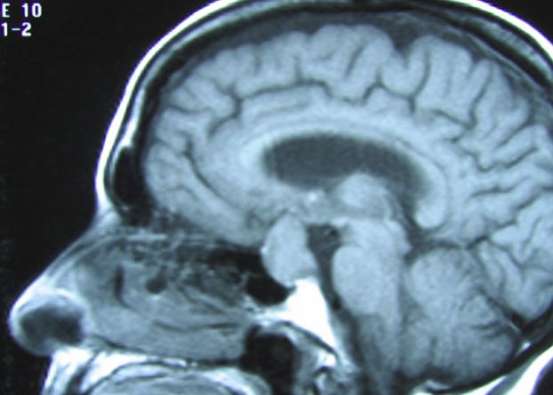

Liar, Liar, Brain on Fire
The science of deception
Janice Gee
Fall 2005

“I did not have sexual relations with that woman.” Whether inside the
hallowed halls of the United States Congress, or in the office of a
high school principal, lie detection reigns paramount in society. From
administering sophisticated polygraph tests to simply examining whether
or not a person can maintain eye contact, we are constantly searching
for methods to determine whether or not a person is lying. Now, there
might exist a way to scientifically prove this fact as researchers
begin to pinpoint regions of the brain associated with deceitful
behavior by using the latest in brain scanning technology.
Much of this research has focused on a region of the
brain known as the prefrontal cortex. According to Daniel Krawczyk,
PhD, of the Helen Wills Neuroscience Institute at the University of
California, Berkeley, the prefrontal cortex is central to functions
such as problem solving, planning, reasoning, and analyzing known
facts. These functions, which are often used in deception, are known as
cognitive functions. According to Krawczyck, “the prefrontal cortex is
thought of as ‘uncommitted cortex,’ because there is not one function
that it is supposed to do. It is the executive center of the brain.”
The prefrontal cortex is also the center for the
discretion between moral and immoral decisions. “[It] plays a key role
in deception for several reasons. This is an area which processes all
kinds of information, emotional or neutral, tags them with reward
values, and finally makes decisions based on the information. This is
also an important region for rule-retrieving, rule-maintaining, and
making moral-judgments. All these are important for deception,” reveals
Yaling Yang, a PhD candidate at the University of Southern California.
Yang believes that prefrontal white matter plays a
crucial role in the act of lying. In a recent study, he used structural
magnetic resonance imaging technology to examine and compare the brains
of pathological liars, antisocial individuals, and normal individuals.
He discovered that the brains of pathological liars contain a higher
amount of white matter in the prefrontal cortex compared to those of
normal individuals, suggesting that an increase in white matter may be
related to one’s propensity for lying. “Based on developmental
theories, a child starts showing the ability to lie at around age
three. This ability quickly develops and peaks approximately at age
ten. This is the period of time [during which] the white matter volume
in the brain increases dramatically to almost 60 percent in a normal
child,” he says. Yang also adds that research demonstrates that a
decrease in prefrontal white matter results in a limited ability to
lie; he uses autistic children, who cannot tell lies very successfully,
to illustrates this finding. Yang indicates that “autistic children
only show 10 percent white matter increase between the ages of three to
ten. Failure in the development of white matter [may have resulted] in
their [lying] impairment.”
In addition revealing details about the structure of
the brain, brain scanning technology can also detect increases in
neuronal activity within specific regions of the brain when a person is
lying. Daniel Langleben, PhD, of the University of Pennsylvania, used
functional magnetic resonance imaging scans (fMRI) to determine changes
in brain activity during the act of lying. According to Dr. Krawczyk,
fMRI scans measure the oxygen flow in the regions of the brain that are
being examined. He asserts that “fMRI scans are a way of getting very
precise information on what parts of the brain are involved in certain
functions.”
In his study, Dr. Langleben discovered an increase
in neuronal activity in the both the prefrontal cortex and another
cortical region, the anterior cingulate cortex, while an individual was
lying. The anterior cingulate cortex, located roughly in the center of
the brain, regulates cognitive functions such as reward anticipation
and decision-making. According to Dr. Langleben, increased activity in
the anterior cingulate cortex and the prefrontal cortex suggests that
the brain must work harder to lie. Based on this data, he concluded
that the brain naturally wants to express the truth. In his view, lying
requires the brain to suppress the truth, think of a lie, and express
the lie. He reasons that this “extra work” translates to an increase in
brain activity.
Because of the ability of fMRI scans to produce
precise readings of brain activity, many have proposed these scans
could possibly replace polygraph tests as the most commonly used lie
detecting method. However, Dr. Langleben reminds us that “[an fMRI
scan] is not a lie detector. It is simply a more accurate way to
measure brain activity than any currently available noninvasive
method.” Yang agrees, adding that “with more studies on this particular
topic, brain imaging will have practical implications in lie detection.
But I believe that using one technique is never reliable enough to draw
any conclusion on whether an individual is telling a lie or not.”
Dr. Krawcyzk also believes that fMRI scans cannot be
used as lie detectors just yet. He stresses that lying is such a
complex function that it is almost impossible to attribute the act of
lying to any specific cortical areas. Therefore, it is difficult to
automatically associate the increased activity in a specific region of
the brain with lying. “We don’t do things with only one part; there are
a variety of functions that are performed by the same area,” he states.
“It’s just not possible to assign a specific function to every brain
area, and therefore anything complicated can start to raise questions
on whether it is truly responsible for the behavior.”